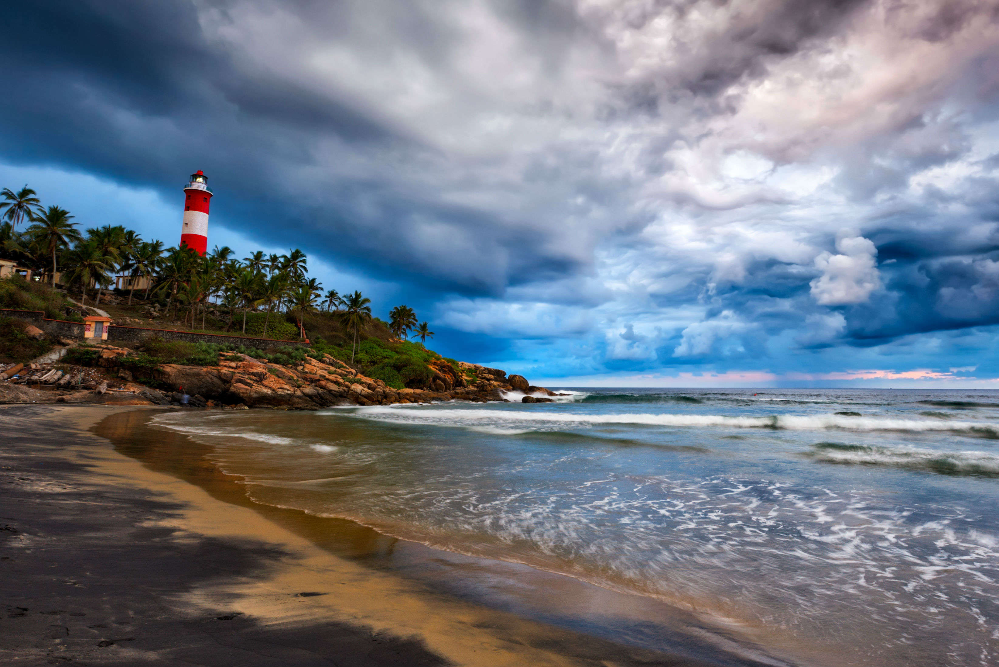

PADMANABHASWAMY TEMPLE

NAPIER MUSEUM

KOVALAM BEACH
Trivandrum is the perfect gateway to backwaters and beaches. Start your journey from a place where all the attractions are there and they are not far apart. You will be amused by the wonderful beaches and the serene backwaters of Trivandrum. Trivandrum, most important historical city is a feast for the eyes. There are so many museums and palaces in Trivandrum. Trivandrum offers everything for everyone. You can't resist the charm of this wonderful city.
There is a collection of museums in Thiruvananthapuram. These museums are in a park in the North of the city. The entry charge to this museums is very less but its very entertaining and informative.
This temple city has so many magnificent sights to offer. The most defining feature of the city is the Padmanabhaswamy temple of Lord Vishnu. The panoramic view of stunning landscapes, sun kissed beaches, serene backwaters, architectural beauty of old temples and royal palaces will definitely be a wonderful experience for you all.
PADMANABHASWAMY TEMPLE
NAPIER MUSEUM
KOVALAM BEACH
You must have heard about this temple. This beautiful temple has created a buzz in the country with its million worth treasure. Sri Padmanabhaswamy temple situated at the heart of the city is one of the most popular attractions in Thiruvananthapuram. Constructed in Dravidian style this temple worth a visit. The temple has a seven story carved gopuram which is reflected in the sacred tank.
Napier Museum a typical Kerala style architectural beauty has a precious collection of things. The museum houses an electric assortment of Bronzes, historical and contemporary ornaments, temple carts, Ivory carvings and figures of Kathakali dancers. This life size figures of Kathakali dancers are amazing with full costume.
Kovalam, an internationally renowned beach is situated just 16 km away from Thiruvananthapuram. This lovely beach is one of the most popular hangouts in the country. Kovalam is a shallow beach with three adjacent beaches.
Unlike other beaches Kovalam is unique with so many specialities. This stunning beach is surrounded by tall coconut trees. Kovalam offers you so many leisure activities. You can involve in beach sport activities like swimming or can sit back and relax the laid back attitude of this beach. Take a walk through the pillow soft sand and enjoy the breathtaking beauty of the stunning sunset.